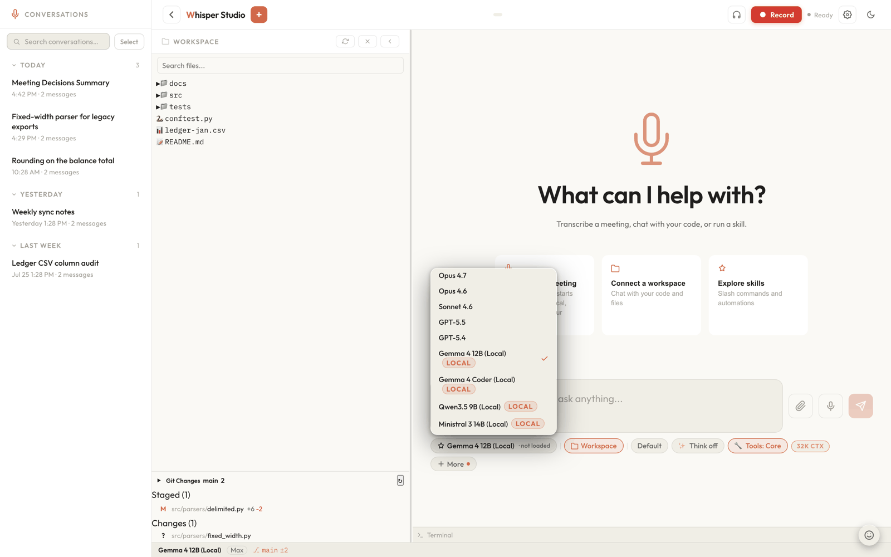

Your first chat
The composer is the heart of Whisper Studio. In a few minutes you will send a
message, watch the answer stream in, switch models and reasoning depth, and learn the slash
commands that live behind the / key.
Everything below happens in the chat input at the bottom of the window. A single turn travels
from the composer to POST /api/chat, out to whichever model you have selected -
Claude or GPT on Amazon Bedrock, or an on-device model in local mode - and back as a
stream you watch fill in live. The conversation is saved as you go, so you can leave and pick it
back up from the sidebar.

Send your first message
You do not need a workspace, an attachment, or any setup beyond a working AWS connection (see First run & verify). Just type and press Enter.
-
Type in the composer
Click the input box (it reads Fix a bug, build a feature, ask anything...) and write a question. The box grows as you type and scrolls once it gets tall.
-
Press Enter to send
Enter sends the message. Shift+Enter inserts a newline so you can write multiple paragraphs before sending. Cmd+Enter always sends, even while an autocomplete popup is open. You can also click the paper-plane Send button.
-
Watch the answer stream
The reply arrives token by token rather than all at once. While it streams, the Send button becomes a square Stop button. Click it (or press Esc) to end the turn early.
-
Ask a follow-up
Type again and send. Whisper Studio re-sends the earlier messages as context, so the model remembers what you already discussed. The conversation is saved automatically and appears in the left sidebar, where you can rename it, search it, or return to it later.
Prefer talking? The composer has two ways. The microphone dictates into the input box, and you can send hands-free by ending with a spoken phrase like "send now" or "okay send". The waveform button beside it starts a real spoken conversation instead. See Voice & meetings for dictation and recording, and Voice conversations for talking.
You can keep typing while it works
You do not have to wait for an answer to finish before adding something. Send a message while a turn is streaming and it is folded into that same running turn rather than blocked or started as a second conversation. A short notice confirms it: "Added to the running turn. The assistant will take it into account as it continues and answer it when this turn finishes." Use it to correct course ("actually, use the staging config"), add a constraint, or answer a question the assistant raised mid-way.
It is deliberately all-or-nothing. If the turn finished in the moment between your pressing Enter and the message arriving, nothing is sent and your text stays in the composer, with a notice saying so, so you can send it again as a fresh message. You never get a silently lost message or a surprise second answer.
Attachments are for starting a turn, not steering one: a file you attach while an answer is streaming is not carried into the running turn. Send the file with a fresh message once the turn ends.
Stopping a turn keeps what you saw
Click Stop (or press Esc) and the turn ends immediately, but nothing on screen is thrown away. The partial answer is committed to the transcript with a (Stopped) marker, every tool step shown so far is kept (a step still running is frozen as stopped rather than spinning forever), and any live team card is closed in place. The turn is still in your history, so you can read what it had done and pick up from there.
Stop also reaches past the visible answer: it stops every subagent this session started and the background shell tasks it spawned. Other sessions keep streaming; only the one you are looking at is stopped. If a turn had produced nothing at all yet, nothing is appended.
Switch models mid-conversation
The model that answers is shown in the chip on the left of the toolbar under the composer. Click it to pick a different one at any time. The conversation continues with the new model on your next message, keeping all its history.
The models that ship in the catalog:
| Family | Models | Reach for them when |
|---|---|---|
| Claude | Haiku 4.5, Sonnet 4.6, Sonnet 5, Opus 4.6, Opus 4.7, Opus 4.8, Opus 5 | Haiku is fastest and cheapest for quick questions; Opus goes deepest on hard, multi-step work; Sonnet sits in between. Opus 5 is the shipped default. |
| Fable | Fable 5.0, Fable 5.1 | Same depth as Opus, behind a one-time data-retention consent screen. |
| GPT (on Amazon Bedrock) | GPT-5.4, GPT-5.5, GPT-5.6 Sol, GPT-5.6 Terra, GPT-5.6 Luna, GPT-6 Astra | A second opinion, or when you prefer their style. Routed through the OpenAI-on-Bedrock path. |
| On-device | whatever you installed | Offline work and zero cost per turn. A fresh install ships none; add them from Settings → Models → Discover. |
Your own list can differ: you can hide shipped models or add your own, so the chip shows what your configuration exposes. If you would rather keep your hands on the keyboard, type a slash command instead:
/model haiku
/model sonnet5
/model opus5.0Type /model and a space to autocomplete against whatever is available: the picker
shows the version label (for example Sonnet 4.6) while inserting the short key
(sonnet). See Model modes for cloud, hybrid, and
on-device options, and Model backends & modes for how each
one is routed.
Models badged Mythos in the picker (Fable 5.0 and 5.1) require a one-time data-retention consent screen the first time you switch to them. Read it and confirm to continue, or cancel to stay on your current model.
Set the reasoning depth
Alongside the model there is an Effort chip that sets how much the model thinks before it answers. Lower effort is quicker and cheaper; higher effort spends more time reasoning on harder problems. Set it from the chip, or by command:
/effort low
/effort medium
/effort high
/effort maxThe full ladder is none, low, medium, high,
extra, max, ultracode, and the default is
high. Which rungs you actually get is per-model: the deepest models (Opus 4.8,
Opus 5, Fable) offer all of them, Sonnet 5 and GPT-6 Astra skip extra but still
reach ultracode, Sonnet 4.6 and the older Opus models stop at max, and
Haiku and on-device models have no effort tiers at all, so the Effort and Response-length chips
are hidden while one of those is selected. Ask for a level the current model does not offer and
Whisper Studio clamps to the nearest lower one and tells you what it settled on. The composer
also accepts /effort xhigh as an alias for Extra. Type /effort
with no argument to see exactly which levels this model supports.
ultracode is not just more thinking: it is a session mode that turns on workflow
orchestration on top of the model's deepest reasoning setting. See
Ultracode workflows.
Slash commands
Type / at the start of the composer to open the command list. Keep typing to
filter, use ↑/↓ to move, and press Enter or
Tab to accept. Slash commands run even while a previous answer is still streaming.
Here are the ones you will reach for first:
| Command | What it does |
|---|---|
/model <key> | Switch the chat model for the rest of the session (for example /model haiku). |
/effort <level> | Set reasoning depth. Levels are per-model; an unavailable level clamps to the nearest lower one. |
/plan | Toggle plan mode, a read-only mode where the model proposes a plan before it edits or runs anything. See Permissions & approvals. |
/verbosity <level> | Set the response length: brief, normal, or detailed. Mirrors the response-length control under the composer. |
/btw <question> | Ask a side-channel question. The answer pops up on its own and does not enter the main transcript, so a quick aside never derails the conversation. |
/goal <text> | Set a goal and start working on it. The goal text is sent as your next message, so you do not send it twice; if a turn is already running it is folded into that turn instead. The assistant keeps going until a completion gate judges the goal met. /goal clear ends it, and /goal gate add <command> names a shell command that must exit 0 first. See Goals & autopilot. |
/subagent <task> | Spawn a one-shot subagent that works in the background with the full tool loop, streaming its progress into a card while you keep chatting. See Sub-agents & teams. |
/export | Download the whole conversation as a text file. |
/clear | Wipe the visible chat. The saved session keeps its history; this only clears what is on screen. |
/rename <title> | Give the current session a custom title in the sidebar. |
/doctor | Run diagnostics and show the results (handy if chat is not responding). /doctor context rightsizes the system prompt instead. |
/help | Open a dialog listing every command, grouped by category. |
There are more (/workflow and /ci for
workflows and CI, plus /memory, /theme,
/notify, /settings, /skills:, /workspace, and
the /file: and /mcp: submenus). The full catalogue lives in
Slash commands reference, and /help shows the
live list from inside the app.
/clear empties the on-screen conversation and cannot be
undone from the composer, but it does not delete the saved session. To keep a copy of a long
chat before clearing it, run /export first.
Attachments and @ mentions
You can bring context into a chat several ways. Drop files onto the composer (or use the
paperclip) to attach documents and images; Whisper Studio extracts their text and passes images
to the model as vision input. Then the @ key opens a menu of context sources:
| Mention | What it pulls in |
|---|---|
@file: | A specific file from the connected workspace. Also available as the /file: submenu. |
@skills: | Runs a named skill for this message. A bare @<name> works too. |
@mcp: | Browses the tools your connected MCP servers expose. |
@index | Searches your indexed folders for this message and grounds the answer in the hits. |
@docs | Answers strictly from this documentation, citing the pages it used. |
Working with documents
Attach a contract, deck, or PDF and ask about it in plain language.
The workspace IDE
Connect a repo, then reference files with @file: and let Claude read and edit.
What next
You now have the core loop: type, send, stream, steer mid-turn, stop when you have seen enough, follow up, and adjust the model and effort chips. From here, pick the workflow that fits what you are doing.
Give it a goal
Set a goal and let it run to completion instead of nudging "keep going", and know when a plain prompt is better.
Talk instead of type
Hold a spoken conversation while the assistant uses the same tools as typed chat.
Find an old conversation
Search every past session by content, not just by title, and jump to the exact message.
Control what it can do
Understand the Mode chip and the approval cards before you let it act.
Related: Voice conversations, Voice & meetings, Working with documents, Permissions & approvals, and the architecture deep-dive Chat & tool orchestration.